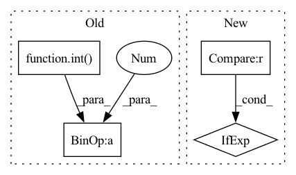

Pattern ID :8059

Before Change
def CSPDarknet(width_mul=1, depth_mul=1, out_features=[-3, -2, -1], use_depthwise_conv=False, input_shape=(512, 512, 3), activation="swish", model_name=""):
base_channels = int(width_mul * 64)
inputs = keras.layers.Input(input_shape)
Stem
nn = conv_dw_pw_block(inputs, 32, kernel_size=3, strides=1, activation=activation, name="stem_1_") // Fixed as 32
nn = conv_dw_pw_block(nn, base_channels, kernel_size=3, strides=2, activation=activation, name="stem_2_")
nn = csp_block(nn, expansion=0.5, activation=activation, name="stem_3_")
features = [nn]
dark blocks
depthes = [max(round(depth_mul * ii), 1) for ii in [2, 8, 8, 4]] // YOLOR_CSP depth
channels = [base_channels * 2, base_channels * 4, base_channels * 8, base_channels * 16]
use_spps = [False, False, False, True]
for id, (channel, depth, use_spp) in enumerate(zip(channels, depthes, use_spps)):
stack_name = "stack{}_".format(id + 1)
After Change
inputs = keras.layers.Input(input_shape)
Stem
stem_width = stem_width if stem_width > 0 else channels[0] // 2
if use_focus_stem:
nn = focus_stem(inputs, stem_width, activation=activation, name="stem_")
else:
In pattern: SUPERPATTERN
Frequency: 4
Non-data size: 4
Instances
Fragment ID: 28576708
Project Name: leondgarse/keras_cv_attention_models
Commit Name: bef44f2c07106cb7cf251facb6581ef6220cde48
Time: 2022-03-18
Author: leondgarse@gmail.com
File Name: keras_cv_attention_models/yolor/yolor.py
M Class Name: AnonimousClass
N Class Name: AnonimousClass
M Method Name: CSPDarknet(12)
N Method Name: CSPDarknet(7)
M Parent Class:
N Parent Class:
M File Name: keras_cv_attention_models/yolor/yolor.py
N File Name: keras_cv_attention_models/yolor/yolor.py
M Start Line: 84
M End Line: 102
N Start Line: 109
N End Line: 141
'>
Before Change
color = label_color[label_index]
cv2.rectangle(img, (int(bbox[0]), int(bbox[1])), (int(bbox[2]), int(bbox[3])), color, 2)
cv2.putText(img, label, (int(bbox[0]), int(bbox[1])), cv2.FONT_HERSHEY_COMPLEX, 1, color)
cv2.circle(img, ((int(bbox[0]) + int(bbox[2])) // 2, (int(bbox[1]) + int(bbox[3])) // 2), 4, color, -1)
cv2.namedWindow("img", 0)
cv2.imshow("img", img)
After Change
// show box
cv2.rectangle(img, (bbox[0], bbox[1]), (bbox[2], bbox[3]), color, 2)
// show label and conf
txt = "{}-{}".format(label, tracking_id) if tracking_id is not None else "{}".format(label)
font = cv2.FONT_HERSHEY_SIMPLEX
txt_size = cv2.getTextSize(txt, font, 0.5, 2)[0]
cv2.rectangle(img, (bbox[0], bbox[1] - txt_size[1] - 2), (bbox[0] + txt_size[0], bbox[1] - 2), color,
'>
Fragment ID: 28576704
Project Name: zhangming8/yolox-pytorch
Commit Name: da45bae127ab1689628a76fbea8e2d4b7e0e19a4
Time: 2021-07-28
Author: zhangming8@github.com
File Name: tools/show_coco_anns.py
M Class Name: AnonimousClass
N Class Name: AnonimousClass
M Method Name: vis_coco_anns(1)
N Method Name: vis_coco_anns(1)
M Parent Class:
N Parent Class:
M File Name: tools/show_coco_anns.py
N File Name: tools/show_coco_anns.py
M Start Line: 22
M End Line: 61
N Start Line: 22
N End Line: 69
'>
Before Change
int(elapsed + 0.5), eta)
bar_width = min(
int(self.terminal_width - len(msg)) + 2,
int(self.terminal_width * 0.6), 50)
bar_width = max(2, bar_width)
mark_width = int(bar_width * percentage)
After Change
eta = int(elapsed * (1 - percentage) / percentage + 0.5)
msg = self._with_bar.format(
self._completed, self._task_num, fps, ceil(elapsed), eta,
"\n" if self._task_num == self._completed else "")
bar_width = self._get_bar_width(msg)
mark_width = int(bar_width * percentage)
'>
Fragment ID: 28576707
Project Name: yeliudev/nncore
Commit Name: c0c35d83983d84f236c7b52eca025ef9083cc3da
Time: 2020-03-17
Author: goolhanrry@gmail.com
File Name: nncore/utils/progressbar.py
M Class Name: ProgressBar
N Class Name: ProgressBar
M Method Name: update(1)
N Method Name: update(1)
M Parent Class: object
N Parent Class: object
M File Name: nncore/utils/progressbar.py
N File Name: nncore/utils/progressbar.py
M Start Line: 41
M End Line: 73
N Start Line: 44
N End Line: 64
'>
Before Change
// follow LibKGE protocol for ranking and ties
rank = int(torch.sum(row > true_score, dtype=torch.long))
num_ties = int(torch.sum(row == true_score, dtype=torch.long))
rank = rank + num_ties // 2 + 1
// compute MRR and Hits@k
mrr.append(1 / rank)
hits.append(int(rank <= k))
return mrr, hits
After Change
scores[torch.isnan(scores)] = float("-Inf")
// get the scores of the true target subjects/objects
idx = 0 if direction == "s" else 2
targets = test_spo[:, idx].long()
arange = torch.arange(len(targets), dtype=torch.long, device="cpu")
true_scores = scores[arange, targets].view(-1, 1)
'>
Fragment ID: 28576702
Project Name: tsafavi/codex
Commit Name: 3dddca246e4fb616cef251bafb32dac648e8eedb
Time: 2020-07-08
Author: tsafavi@umich.edu
File Name: scripts/baseline.py
M Class Name: AnonimousClass
N Class Name: AnonimousClass
M Method Name: evaluate_rankings(5)
N Method Name: evaluate_rankings(5)
M Parent Class:
N Parent Class:
M File Name: scripts/baseline.py
N File Name: scripts/baseline.py
M Start Line: 129
M End Line: 151
N Start Line: 129
N End Line: 148